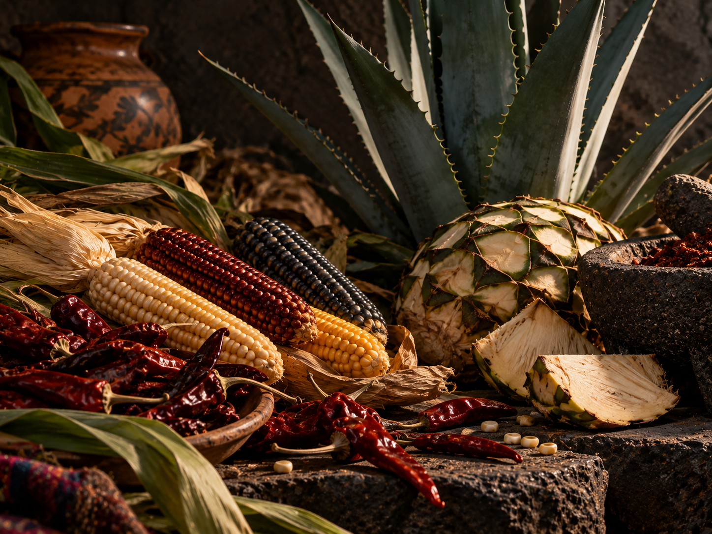

Corn, Chili and Agave: a living heritage
These three elements form the basis of a cuisine that is also territory, knowledge and community. Mexican traditional cuisine, recognized by UNESCO as Intangible Cultural Heritage, preserves farming practices, techniques and rituals passed down through generations.
From the milpa to the table, its flavors tell a story of adaptation, celebration and deep connection to the land.